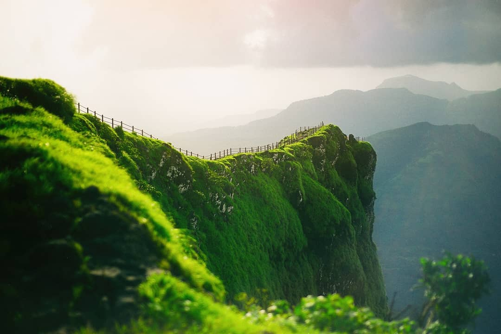
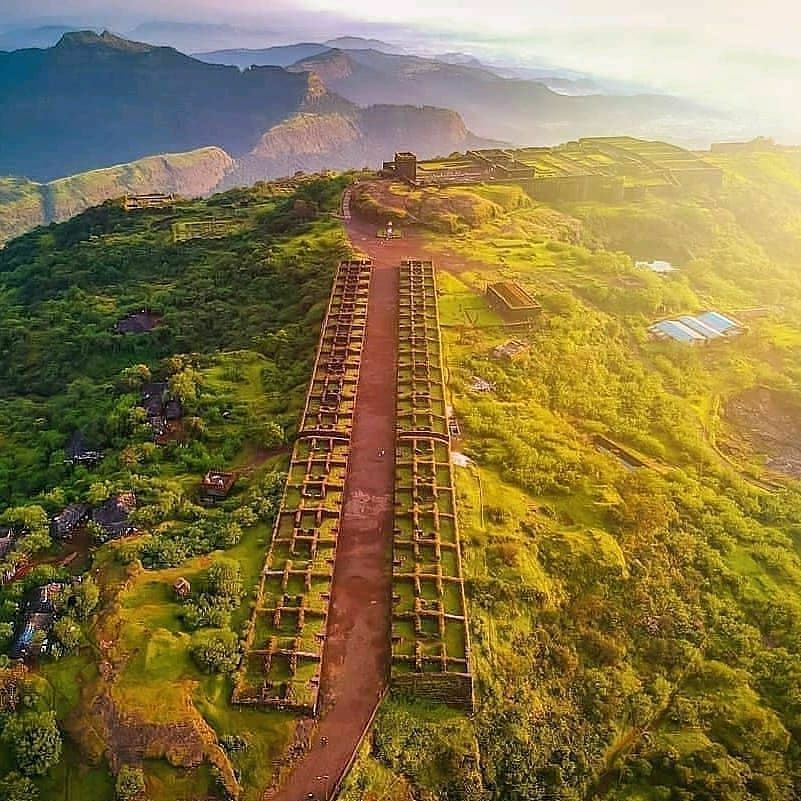
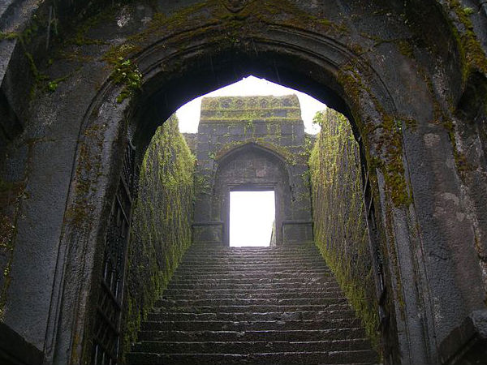
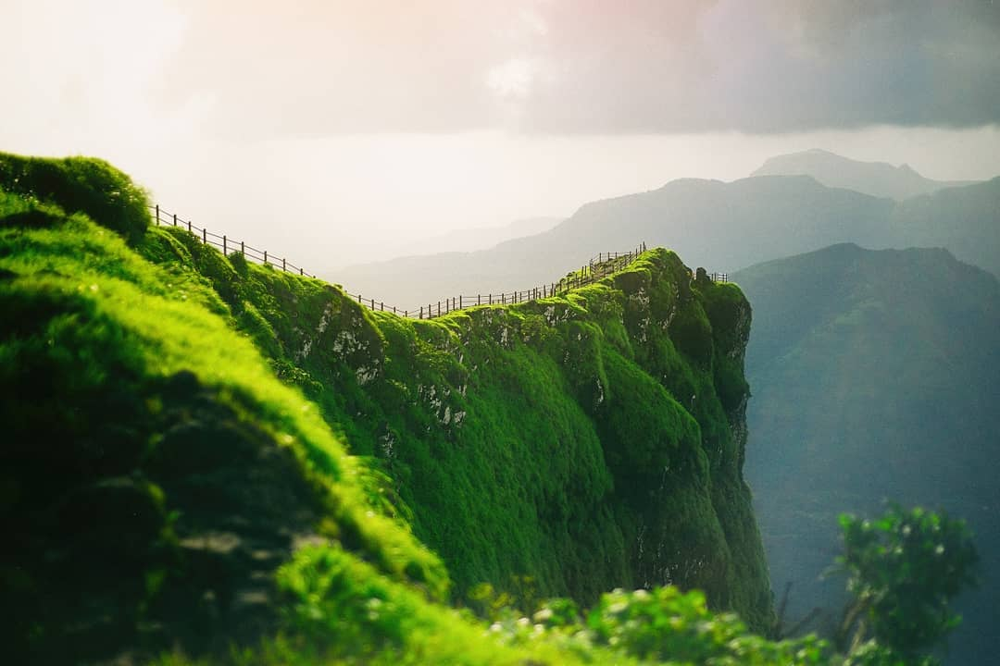
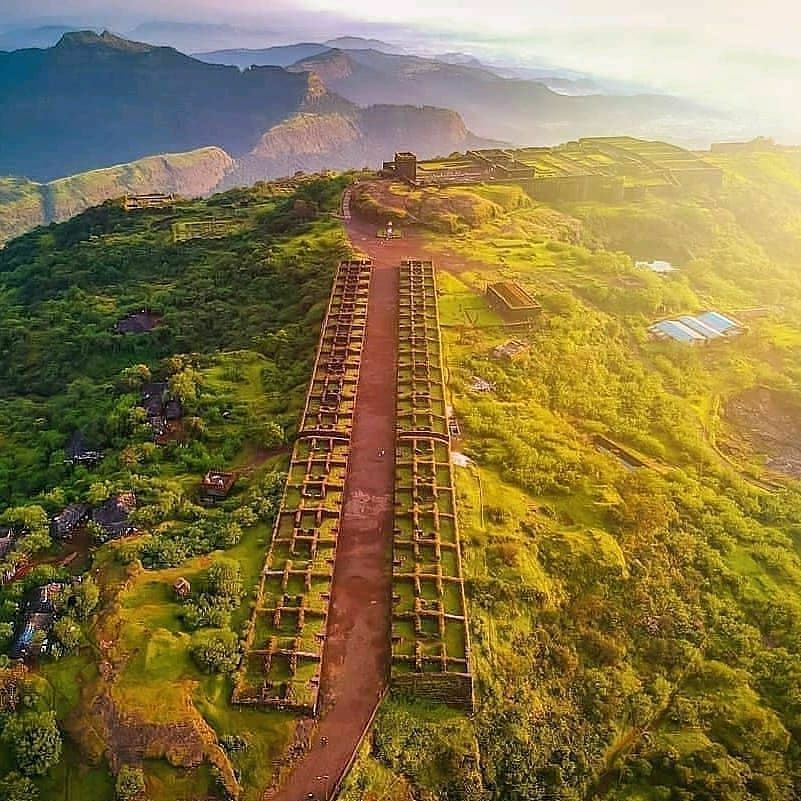
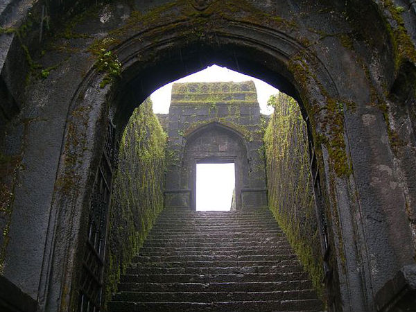

Raigad

 





About
Raigad Fort, also known as Raigarh Fort, is a historically significant hill fortress located in the Raigad district of Maharashtra, India. It holds great importance in the history of the Maratha Empire and is closely associated with the legendary Maratha warrior king, Chhatrapati Shivaji Maharaj. The fort is situated at an elevation of approximately 2,700 feet (820 meters) above sea level in the Sahyadri mountain range, providing commanding views of the surrounding landscape.
History:
The construction of Raigad Fort began in 1656 under the orders of Chhatrapati Shivaji Maharaj after he decided to move his capital from Rajgad Fort to a more centrally located and secure site. It took around three years to complete the construction, and the fort became Shivaji's capital in 1674. He renamed it "Raigad" (meaning "The King's Fort") to signify its importance in the Maratha Empire.
Chhatrapati Shivaji Maharaj ruled from Raigad Fort until his death in 1680. The fort continued to be an essential stronghold for the Marathas even after his demise. However, in 1689, during the Battle of Raigad, the fort was captured by the Mughals under the command of Emperor Aurangzeb after Shivaji's son, Sambhaji, was betrayed and captured.
The fort remained under Mughal control for several years until the Marathas, led by Chhatrapati Shivaji Maharaj's grandson, Chhatrapati Shahu, recaptured it in 1733. Raigad remained a significant Maratha stronghold until the decline of the Maratha Empire during the early 19th century when it fell to the British East India Company.
Raigad Fort is renowned for its military architecture and strategic location. It is surrounded by steep cliffs and rocky terrain, making it difficult for enemies to approach. The fort's main features include:
Maha Darwaja: The grand main entrance to the fort, which is an imposing stone structure.
Hirkani Buruj: A famous watchtower named after a woman named Hirkani, who used a secret route to access the fort to meet her child.
Takmak Tok: Also known as the "Punishment Point," it is a cliff from which Shivaji used to administer justice.
Jagadishwar Temple: A temple dedicated to Lord Shiva, which holds religious significance.
Raj Bhavan: The ruins of the royal residence where Chhatrapati Shivaji Maharaj resided.
Public Durbar: A large open space where the king addressed the public and held court sessions.
Trekking and Tourism:
Today, Raigad Fort is a popular tourist destination and a revered pilgrimage site for followers of Chhatrapati Shivaji Maharaj. Visitors can reach the fort by either climbing around 1,700 steps or taking a cable car ride, which offers breathtaking views during the ascent. The fort's historical significance, coupled with the scenic beauty of the Sahyadris, attracts history enthusiasts, trekkers, and nature lovers alike.
Raigad Fort stands as a symbol of Maratha pride and valor and serves as a reminder of the indomitable spirit of Chhatrapati Shivaji Maharaj and the Maratha Empire.